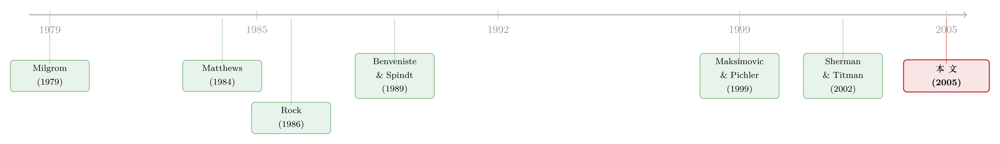

新股该卖给多少人？——一笔关于投行「偷懒」的暗账
本文读的是 Chris Yung (2005, Review of Financial Studies)：它把「投行筛选新股」和「投资者评估新股」这两种信息生产同时写进一个模型，得到一个反直觉的结论——把发售开放给越来越多的投资者，未必越好。当投资者因为搭便车而不再做研究时，投行也就失去了认真筛选好公司的动力；于是「开放发售」反而把投行的道德风险推到了极致。这正好解释了那个老问题——「参与限制之谜」：为什么投行偏偏不肯把新股卖给所有人。
1 引言：一个本不该存在的谜
先问一个看上去答案显而易见的问题：一个以利润最大化为目标的投行，为什么要主动限制参与新股发售的投资者人数，亲手掐断价格竞争？
按照教科书里的直觉，这件事是不该发生的。投资者越多，竞争越激烈，价格越接近真实价值，发行人拿到的钱越多。更何况，在主流的 簿记建档 (bookbuilding) 模型里，新股之所以要 折价发行 (underpricing)，是因为知情投资者握有信息、可以「隐瞒」或「歪曲」自己的判断来压低价格（尽管在均衡中他们说的是实话）。那么解药就很简单：多请一些投资者进来，谎言就更容易被戳穿，信息租金 (information rents) 也就被竞争稀释掉了。换句话说，如果折价来自「从投资者嘴里撬信息很难」，那投行就该把人请得越多越好。
理论文献几乎一边倒地支持这个方向。Milgrom (1979) 证明，在一价拍卖里，当投资者人数趋于无穷，价格收敛到真实价值；Back and Zender (2001) 把这个结论推广到可分割商品的统一价格拍卖——这恰好是对新股发售相当贴切的一个刻画。看上去，无论用哪种发售机制，卖方的最优选择都是：请尽量多的人来。
可现实偏偏不是这样。投行确实在限制参与人数，关于这一点的指责由来已久（Wall Street Journal 2000 就报道过 SEC 对发售流程的调查）。经验上也有迹可循：拍卖式发售通常对所有人开放，价格由出价而非「关系」决定，而它的折价往往很低。于是 Yung (2005) 抛出的，正是这个被前人反复绕开的谜——参与限制之谜 (participation restriction puzzle)：如果开放发售真能把竞争最大化、把折价压到最低，投行为什么不这么做？
2 被忽略的「另一半」：双边信息生产
这篇文章给出的答案，藏在一个被几乎所有 IPO 模型遗漏的环节里。
以往的模型，要么只让投资者生产信息（买方），要么只让投行生产信息（卖方），却从没有人把两边同时内生化。Yung 的第一个、也是全文的灵魂贡献，就是承认一件事：买方的信息生产和卖方的信息生产，是绑在一起的。
这条逻辑链条值得慢慢看。投行手里握着一堆好坏不一的公司，它可以花成本去「筛选」（screening），把烂公司挑出来扔掉，从而提高最终上市那家公司的质量。但筛选是要花钱的，而且谁也看不见投行到底有没有认真筛——这是一个典型的 道德风险 (moral hazard) 问题。
那么投行会不会认真筛？关键要看：它的努力能不能换来回报。 而回报来自哪里？来自发售价格能不能反映公司的真实质量。如果投资者根本不做研究、对公司一无所知，那么发售的结果（最终成交价）就和公司的真实价值毫无关联——好公司和烂公司卖一个价。既然如此，投行又何必费力去筛？反正筛了也没人看得出来，价格也不会更高。于是它干脆偷懒，一单不筛。
反过来，只有当投资者愿意花成本去评估、去甄别，价格才会和真实价值挂钩，投行认真筛选才有了「即时的财务回报」。
一句话点透：投行希望把发售结构设计得能诱导投资者去做研究——否则它自己的道德风险就会发作。 卖方的勤勉，要靠买方的勤勉来「锚定」。这条买卖双方之间的纽带，是全文反复要讲透的那一个核心。
而且作者特别强调，这条纽带并不局限于簿记建档这一种机制。只要「期望成交价随投资者信号质量上升而上升」，这条链条就存在。 这让结论有了远超 IPO 的普适性。
有了这条纽带，第二个、也是更有冲击力的推论就呼之欲出了——larger investor pools may not always be better，投资者池子越大，未必越好。
3 模型：把两种偷懒写进同一个均衡
这是一篇纯理论文章，没有数据、没有回归。所以最值得花笔墨的，是把模型的设定和那几步关键推导讲清楚。
3.1 设定
一池公司在找钱。好公司价值为 1，坏公司价值为 l < 1，池子里好公司的比例是 α。市场上有无穷多个 风险中性 (risk-neutral) 的投资者，他们既无财富约束，也无法直接接触公司。事前，所有人（包括公司自己）都不知道公司质量。
卖方（投行）的信息生产。 投行能接触这池公司，并能以成本去（不完美地）了解它们。若投行付出筛选努力 v，它能识别并剔除坏公司中的一个比例 r(v)；v 单位努力的成本是 C_v。从剩下的池子里，投行挑一家去上市。由贝叶斯法则，这家公司是好公司的概率为：
$$P_G = \frac{\alpha}{\alpha + (1-r)(1-\alpha)}$$
模型假设 \(r' > 0,\ r'' < 0,\ \lim_{v\to 0} r'(v) = \infty\)，于是相应地 \(P_G' > 0,\ P_G'' < 0,\ \lim_{v\to 0} P_G'(v) = \infty\)。最后那个「努力趋于零时边际收益无穷大」的条件很重要——它意味着只要筛选有任何回报，投行就愿意从「零」开始筛一点。
买方（投资者）的信息生产。 每个投资者评估公司后，收到一个信号 s = G 或 s = B，信号在给定真实价值的条件下相互独立，并满足：
$$\Pr(s = B \mid \text{Firm is Bad}) = Q(u), \qquad \Pr(s = G \mid \text{Firm is Good}) = 1$$
这里 u 是投资者花在评估上的成本投入，Q 是它的函数，满足 \(Q' > 0,\ Q'' < 0\)，且（除非另作说明）\(\lim_{u\to 0} Q'(u) = \infty\)；u 单位评估的成本是 Ku。
注意这个信号结构只允许「第二类错误」：拿到 B 信号，公司一定是坏的（概率为 1）；拿到 G 信号，公司则可能好可能坏。这是一个干净的简化——「预热」阶段要么揭穿这是坏公司，要么没揭穿。
这里埋着全文最微妙的一个旋钮：Q(0) 是否大于零。Q(0) > 0 对应「事前就有私有信息」（投资者不花钱也天生知道点什么）；Q(0) = 0 则对应「信息全靠生产、而非天生禀赋」。后面会看到，结论几乎完全被这个旋钮决定。
3.2 配置规则与价格
承接簿记建档文献，作者只看对称纯策略均衡，并沿用一个标准结论：要把发行优先配置给报告「好信号」的人。这两条限制推出唯一的配置规则——新股在所有报 G 的人之间平分；若无人报 G，则在所有参与者之间平分。 这和 Benveniste and Spindt (1989) 推导出的规则一致。
由此还能得到一个简单而关键的「单调性」：一个投资者若拿到了超过 1/N 的份额（N 是投资者人数），就说明有别人报了 B 信号——也就意味着公司价值是 l。由于簿记建档的「订单」是非约束性的，他会撤单。所以只要出现任何一个 B 信号，价格就是 l。真正的悬念只剩一个：当所有人都报 G 时，投行会定一个什么价？ 作者把这个价记作 P̂。
3.3 三条均衡条件
定理 1 给出：固定投资者人数 N，三元组 \(\{\hat P, v^*, u^*\}\) 是一个 完美贝叶斯均衡 (perfect Bayesian equilibrium, PBE) 的结果，当且仅当下面这套方程成立。
先看其中最核心的一条——投行的一阶条件。我把它的每个部件都标出来：
这条方程（论文中的 Equation 1）就是全文的中心发现。盯住右边的 \([1-(1-Q)^N]\)：如果投资者完全没有信息（Q = 0），这一项等于 0，整个右边趋于无穷大。而左边 P_G' 是递减的、且只有在 v = 0 处才趋于无穷——于是均衡里投行的筛选努力被逼到零。投资者不评估 → 价格与价值脱钩 → 投行不筛选。 这就是「买卖两边信息生产相互捆绑」最直白的数学表达。
另外两条是投资者的一阶条件和参与约束：
$$Q' = \frac{NK}{[1-Q]^{N-1}(1-P_G)(\hat P - l)} \tag{2}$$
$$0 \le (\hat P - l) \le \frac{(1-l)P_G - NKu}{P_G + (1-Q)^N(1-P_G)} \tag{3}$$
Equation (2)刻画的是 搭便车 (free-rider) 效应：别的投资者越是评估（Q 越大），或者人越多（N 越大），自己私下评估的激励就越弱。Equation (3) 是参与约束——P̂ 必须被压得足够低（即必须有足够的折价），才能在期望意义上补偿投资者的研究成本。它同时说明，存在投资者只能「打平」的均衡，也存在他们赚取可观租金的均衡；但两个核心直觉（搭便车、以及投行在投资者无信息时不筛选）对这条租金水平是免疫的——这正是结论稳健、不依赖具体选定哪个 PBE 的原因。
和大多数信号博弈一样，这里的 PBE 有不可数无穷多个：随便挑一个 P̂ 代入 (1)(2) 解出 v* 与 u*，只要满足 (3) 就是一个均衡，稍微扰动 P̂ 又得到另一个。作者的高明之处在于，他要论证的性质对所有均衡都成立，因此不必再做令人头疼的均衡精炼。
4 反转：开放发售为何会「失败」
铺垫到这里，真正的反转可以登场了。
先是一个温和的结论——引理 1：在任何一列 PBE 中，N·u_N 是有界的。每个投资者的研究投入至少以 1/N 的速度趋于零，具体地：
$$N u_N \le \frac{(1-l)P_G}{K} \le \frac{1-l}{K}$$
直觉很朴素：池子越大，留给单个投资者的「那块饼」越薄，自己的信号越不可能恰好是边际性的（pivotal），于是越没动力花钱研究。所以对任何给定的研究水平，总能找到一个足够大的 N，让这个水平撑不下去。
但引理 1 只说了「每个人的研究趋于零」，没说「整体信息也趋于零」。这是个微妙的缺口：哪怕每个人研究越来越少，把无穷多个微弱信号加总起来，整体信息量 \(1 - (1-Q)^N\) 究竟是涨是跌，并不一定。要让它真的趋于零（从而引发开放发售失败），还需要一个额外假设——投资者研究的回报是有界的。
于是有了全文的主结果——定理 2：假设 \(Q'(0) < \infty\)，则存在某个 N*，使得对所有 N ≥ N*，每个投资者的研究都为零。在此之上：
-
(a) 开放发售最优。 如果事前就有私有信息（
Q(0) ≠ 0）且 (3) 取等号，那么当N → ∞时，投行的筛选努力趋于「第一最优」(first best)。注意：这里推动最优的，是整体投资者信息量变得完美——哪怕每个人的主动研究都归零，事前禀赋的信息加总起来依旧把价格钉准了。这就是传统智慧「人越多越好」得以保留的情形。 -
(b) 开放发售失败。 如果事前没有私有信息（
Q(0) = 0），那么对所有N ≥ N*，投行一单都不筛。当N足够大，每个投资者都理性地选择不评估，于是投行面对的是一个完全无知的池子；再由 (a)，价格与价值脱钩，投行的道德风险被放到最大。开放发售，恰恰把投行偷懒的问题推到了极致。
这就是标题里那句「The Dark Side of Open Sales」——开放发售的阴暗面。它给「参与限制之谜」一个干净的答案：在信息是「生产」出来而非「天生禀赋」的世界里，把门开得太大，会先杀死投资者的研究激励，再连带杀死投行的筛选激励。最优的投资者人数可大可小，但最重要的是——它不一定是无穷。
作者也很诚实地补了一刀：Q' 有界只是开放发售失败的充分条件，并非必要条件；当 \(\lim_{v\to 0}Q'(v)=\infty\) 时，既有开放发售最优的算例，也有参与限制最优的算例（这些数值例子可向作者索取）。换句话说，开放发售到底好不好，是高度依赖假设的——这恰恰是本文相对「一边倒」的旧文献最有价值的纠偏。
5 声誉能不能替代这一切？
读到这里，一个自然的反驳是：投行又不是只做一单生意。把烂公司弄上市会砸自己的招牌、损害未来利润。如果长期声誉能管住投行的道德风险，那本文强调的「靠即时价格反馈来约束投行」就显得多余了——况且声誉机制还省去了「投资者重复生产投行已有信息」这层浪费。
第 4 节就专门处理这个问题：把投行改成长寿的，每期带一家公司上市，用贴现因子 d 最大化无穷期望利润；为了好算，把连续的努力 v、研究 u 换成二元选择（筛/不筛、评/不评）。作者比较三种环境：只有信息生产、只有声誉、两者兼有。他假设投行行为以概率 c 在下一期被投资者观察到，一旦被发现偷懒就永远不再光顾（一个故意取得很「狠」的惩罚，纯为计算简便）。
结论是：声誉一般并不足够。 来自「信息性 IPO 价格」的短期财务激励，常常仍是必要的；而且投资者学习与投行声誉之间是互补的——两套约束机制叠加，能严格改善结果。也就是说，本文识别出的那条「价格反馈→约束道德风险」的渠道，并不能被声誉简单地替代掉。
6 文献脉络
把这条线索捋一遍，能更清楚地看到本文站在哪儿。
最早的源头是拍卖理论里那个乐观的结论：Milgrom (1979) 证明竞拍人越多、价格越准；后来 Back and Zender (2001) 把它搬到可分割商品拍卖，强化了「卖方该多请人」的直觉。IPO 这一侧，两块基石分别从两个方向解释折价——Rock (1986) 的 逆向选择 (adverse selection) / 赢家诅咒，和 Benveniste and Spindt (1989) 的「撬信息」机制。本文沿用了后者的配置规则。

但也有人很早就嗅到了「人多未必好」。Matthews (1984) 指出，在判别式拍卖里，竞拍人能在拍卖前买信息时会出现「过度信息购买」，卖方收入可能随竞拍人数单调下降——他甚至主张「禁止私有信息对卖方和社会都有利」。Yung 的反转恰在这里：一旦允许卖方也生产信息，结论可以翻过来——卖方会主动去设计一种「天然鼓励买方研究」的发售，因为待售标的的质量本身是内生的、随机制而变。
更近的一支聚焦买方信息：Sherman (2000) 说买方信息能降低赢家诅咒、抬高价格；van Bommel (2002) 强调当上市后投资对二级市场价格敏感时信息更有价值。而和本文血缘最近的，是 Sherman and Titman (2002)：他们同样假设投资者获取信息，也同样因搭便车而得到「最优投资者人数有限」的结论；区别在于，他们直接假设发行人重视价格准确性，而 Yung 让这种「重视」内生地长出来——价格准确之所以有价值，是因为它能缓解中介的道德风险。至于 Maksimovic and Pichler (1999)，他们让投资者池子规模唱主角，但因为没有建模投行的行为，恰恰漏掉了本文的主线：买卖两边信息生产的纽带。
评论与延伸（Q&A + 研究方向）
(a) 几个可能的疑问
Q：这和 Sherman & Titman (2002) 到底差在哪？不都是「搭便车 → 最优人数有限」吗？
差在「价格准确为什么值钱」这一层。Sherman & Titman 直接假设发行人偏好价格准确（reduced-form），价值的来源被压住了。Yung 让它内生：价格准确之所以值钱，是因为它把投行不可观测的筛选努力「锚」住了——没有买方信息，价格与价值脱钩，投行就一单不筛。所以本文真正的主角是投行的道德风险，买方信息只是约束它的工具。
Q：「开放发售失败」是不是一个脆弱的、依赖特定假设的结论？
作者本人很坦白：
Q'(0) < ∞（研究回报有界）是充分而非必要条件。当研究回报在零点无界时，开放最优和参与限制最优都能构造出来。所以本文的贡献不是断言「开放一定差」，而是推翻「开放一定好」这个旧的一边倒结论——最优人数可大可小，关键是不一定是无穷。
Q：模型有不可数无穷多个均衡，结论还可信吗？
恰恰是因为作者证明的两条核心性质（搭便车、投资者无信息时投行不筛）对所有 PBE 都成立，才不需要做均衡精炼。无论投资者赚取多少租金（
P̂取多少），这两条都不变。这是把一个「均衡太多」的麻烦，转化成了「结论稳健」的优势。
Q：「信号只有第二类错误」（坏信号必坏、好信号未必好）是不是太巧合了？
这是为了在配置规则上保持可处理性而做的简化：它让「预热阶段要么揭穿坏公司、要么没揭穿」成为一个干净的二值事件，从而把单调性写成最简单的形式。代价是把信息结构限定得相当特殊，现实里好/坏信号都可能出错，结论的定量形态会更复杂。
Q：「事前私有信息」Q(0)>0 和「生产出来的信息」Q(0)=0，凭什么差别这么大？
因为只有「生产出来的信息」才会被搭便车侵蚀。事前禀赋的信息不需要花成本，人越多、加总越准，于是 (a) 路径下整体信息趋于完美、开放最优。而生产的信息会随池子变大被逐个抽干，整体信息可被推向零，于是 (b) 路径下开放失败。结论几乎完全由这一个旋钮决定。
Q：这对拍卖 vs 簿记建档之争意味着什么？
经验上拍卖通常对所有人开放、折价低。本文提示：若新股价值的不确定性主要靠投资者主动研究来消化，那么「全开放」的拍卖可能反而削弱了研究激励、放纵了承销方的筛选道德风险。这为「为什么簿记建档（带参与限制）反而流行」提供了一个信息生产视角的理由（关于承销方式之争的另一种解释，也可参见《为什么「贵」的承销方式反而赢了？》）。
(b) 几个可能的研究问题与提案
1. 把「双边信息生产」搬到公司债的初次发行上。 【经济故事】公司债同样有承销商「筛选/尽调」与机构投资者「评估」两层信息生产，且承销商道德风险被广泛怀疑。本文的纽带预测：当投资者池子被做得太大、研究激励被稀释，承销定价对真实信用质量的敏感度会下降。【可行性】中。可用 TRACE 一级市场数据 + 发行条款（订单簿广度、分配集中度）构造「参与广度」代理，看一级折价（首笔二级成交相对发行价的跳升，可参见《新债上市第一笔成交，凭什么白赚 47 个基点？》）与参与广度的非单调关系。识别难点在于参与广度内生于发行质量。
2. 外资持有人作为「边际研究者」的角色。 【经济故事】若某类投资者（如做深度信用研究的外资基金）的研究回报更高，按本文逻辑，把他们纳入发售应能锚住承销方的筛选。反过来，纯被动/无知资金占比上升应削弱这条纽带。【可行性】中。需要发行层面的投资者构成数据（部分主权债、跨境债可得），用「无知资金份额」解释发行后定价误差。识别上可借助纳入指数等外生的资金构成冲击。
3. 用拍卖 vs 簿记建档的自然实验，检验「研究激励被稀释」这一机制。 【经济故事】本文的关键中介变量是「投资者人均研究」。若某市场在两种机制间切换（如日本的历史变迁，见 Kutsuna & Smith 2004），可检验开放度提高是否伴随研究强度（如分析师覆盖、报价离散度）下降，而非仅看折价。【可行性】中偏低。机制变量难以直接观测，需要找研究强度的可信代理；好处是制度切换提供了较干净的处理组/对照组。
4. 把声誉与价格反馈的「互补性」做成可检验的预测。 【经济故事】第 4 节论证两套约束互补。这意味着：声誉资本较弱的承销商，更依赖「信息性价格」来约束自己，因而更倾向于设计能诱导研究的发售（更小的池子、更高折价）。【可行性】中。用承销商声誉排名 × 参与广度的交互项，预测折价与定价准确度。数据可得，难点是声誉与发售设计同时内生。
参考文献
Back, K., and J. Zender (2001). Auctions of Divisible Goods with Endogenous Supply. Economics Letters 73, 29–34.
Benveniste, L., and P. Spindt (1989). How Investment Bankers Determine the Price and Allocation of New Issues. Journal of Financial Economics 24, 343–361.
Campbell, T., and W. Kracaw (1980). Information Production, Market Signalling, and the Theory of Financial Intermediation. Journal of Finance 35, 863–882.
Chemmanur, T., and P. Fulghieri (1994). Investment Bank Reputation, Information Production, and Financial Intermediation. Journal of Finance 49, 57–79.
Kutsuna, K., and R. Smith (2004). Why Does Book Building Drive Out Auction Methods of IPO Issuance? Evidence from Japan. Review of Financial Studies 17, 1129–1166.
Maksimovic, V., and P. Pichler (1999). Private v. Public Offerings: Optimal Selling Mechanisms. Working paper, University of Maryland.
Matthews, S. (1984). Information Acquisition in Discriminatory Auctions. In M. Boyer and R. E. Kihlstrom (eds.), Bayesian Models in Economic Theory, North Holland, New York.
Milgrom, P. (1979). Rational Expectations, Information Acquisition and Competitive Bidding. Econometrica 49, 921–943.
Rock, K. (1986). Why New Issues Are Underpriced. Journal of Financial Economics 15, 187–212.
Sherman, A. (2000). IPOs and Long Term Relationships: An Advantage of Book-building. Review of Financial Studies 13, 697–714.
Sherman, A., and S. Titman (2002). Building the IPO Order Book: Underpricing and Participation Restrictions with Costly Information. Journal of Financial Economics 65, 3–29.
van Bommel, J. (2002). Messages from Market to Management: The Case of IPOs. Journal of Corporate Finance 8, 123–138.
Yung, C. (2005). IPOs with Buy- and Sell-Side Information Production: The Dark Side of Open Sales. Review of Financial Studies 18(1), 327–347.